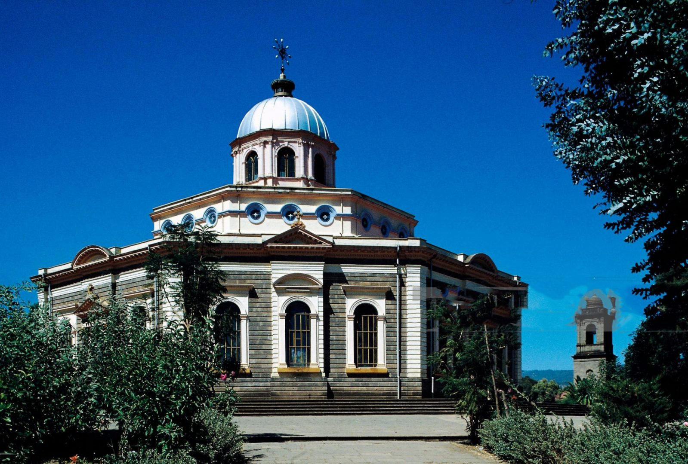

One of Africa's most important cities, Addis Ababa is home to nearly 3.5 million people. Sitting atop the highlands next to the Great Rift Valley, the city sprawls over more than 200 square miles, housing a startling variety of historical and cultural attractions. And, if you want to get out, there are the massive Entoto Mountains to explore right above Addis Ababa.
Within the city center, Addis Ababa boasts monumental architecture and all of the grandeur that can be expected from any national capital. Great churches, mosques, and museums offer respite, solace, education, and inspiration to travelers from around the world. Meanwhile, traditional Ethiopian food and dance are on constant display throughout the city.
Addis Ababa, while cosmopolitan, is still a place where authentic Ethiopian culture is on full display. Whether you're drawn by its history, its art, or its cuisine, there's plenty to be surprised by here.
The idea of Ethiopia as a tabula rasa—a blank slate—was omnipresent in the writings of architects and urban planners occupied with the designs of the colonial capital between 1936 and 1939, who considered the country devoid of any structures of architectural significance. Contrary to the fascination of Libyan whitewashed courtyard house - their simplicity, colours and volumes perfectly in tune with modern taste - the round houses of the Ethiopians were regarded by Italian architects as irrational and unhygienic.
Reasons to Visit Addis Ababa
1. Fantastic Museums
Those who are unfamiliar with Ethiopian culture, as well as its avid admirers, often enjoy the many museums of Addis Ababa. The National Museum of Ethiopia, for example, is a world-class establishment featuring artifacts from Ethiopia's storied ancient civilization to today. More recent history is displayed at the Red Terror Martyrs' Memorial Museum, which chronicles the famine of the 1990s and is staffed by survivors of state atrocities.
Like many capitals, Addis Ababa is home to people of many faiths, and numerous grand churches and mosques fill the cityscape. St. George's Cathedral is known for its beautiful paintings and mosaics, while the Anwar Mosque impresses with its size.
3. Entoto Mountain Hike
Mount Entoto towers over the city and the surrounding landscape. Those looking to drink in a special view are encouraged to plan a day hike up to the summit, which should take about half a day. Additionally, it is possible to take a taxi to the summit for under Br300.
4. Amazing Cuisine
Ethiopian food is delicious, rich, and unique. The national dish features injera, an unleavened bread that is spongy and slightly reminiscent of sourdough. Various stewed meats and vegetables are served on top of injera, and no utensils are used - just scoop the food in the injera and enjoy!
5. Bustling Markets
Ethiopian crafts and clothing are beautiful, and Addis Ababa is a great place to buy them. Many of the city's markets offer hours of entertainment, if only because of the widespread practice of haggling with sellers.
What to do in Addis Ababa
1. Mount Entoto: Sacred Mountain, Soulful People
Arguably the birthplace of humanity, the secret of Ethiopia as one of the world's most interesting but least known travel destinations is finally getting out, due to a booming economy to match the country's immense natural, cultural, and historical wonders. Boasting elegant new hotels, amazingly good restaurants and a host of major infrastructure improvements, the capitol city of Addis Abada is an adventurer's gateway to exotic landscapes, incredible wildlife, the most UNESCO World Heritage Sites in Africa, and some of the world's friendliest, most beautiful people. For many, the adventure begins on a minibus to the breathtaking heights of Mount Entoto, which rises 10,499 feet over Addis Abada amid a dense forest of eucalyptus trees. Historically significant because it was the palatial home of Emperor Menelik II, the founder of modern Ethiopia, the mountain's many monasteries and celebrated churches quietly affirm its reputation as a sacred place.
2. Arada Giyorgis: Venerable St. George's
Founded in the 4th century, the Ethiopian Orthodox Church is one of the world's oldest Christian churches, and represents more than two-third's of the country's 100 million inhabitants. Some of that heritage can be traced to the octagonal-shaped, gray-stone exterior of St. George's Cathedral, which dates back to the 15th century. A pilgrimage site for Rastafarians, the church has seen Ethiopian royalty crowned and torch fires set by Italian fascists in the 1937 war. Ornately cloaked in paintings and mosaics, the Piazza cathedral's compelling history is outlined with many religious artifacts at its museum.

3. Addis Mercato: The Mall Was Never Like This
Sidestep the heavily-laden donkeys and the quick-footed porters carrying humongous odd-sized loads on their head at Addis Mercato, a mass of people, stalls, and goods thoroughly engaged in free enterprise - until everything stops as a herd of goats cross the road. Reputed to be Africa's largest market, offering everything from pungent Ethiopian spices and the world's best coffee to silver jewelry and shoe shines, the mercato is an unforgettable experience. Few places provide an opportunity to find some order and beauty in what looks like unmitigated chaos.
4. Meskel Square: Take a Cab, Please Take a Cab
The site of a 1,600 year-old spring festival, as well as countless public gatherings and demonstrations, Meskel Square is Addis' largest square and a prime location for people watching, including those aspiring Olympian runners who train there. See it but don't drive there. With no traffic lights, no roundabout and nary a cop in sight, it may be the most insane intersection on the planet.
5. National Museum of Ethiopia: Lucy On The Ground With Diamonds
Lucy, who was named for a Beatles song, lived near Addis Ababa 3.2 million years ago, spending most of her time in the trees. When she hit the ground to forge for food she would walk on two upright legs, a trait that could make Lucy - whose well-preserved, fossilized skeleton is held at the National Museum - our oldest direct human ancestor.